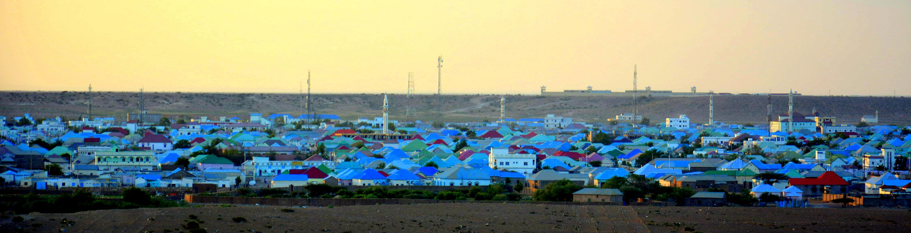
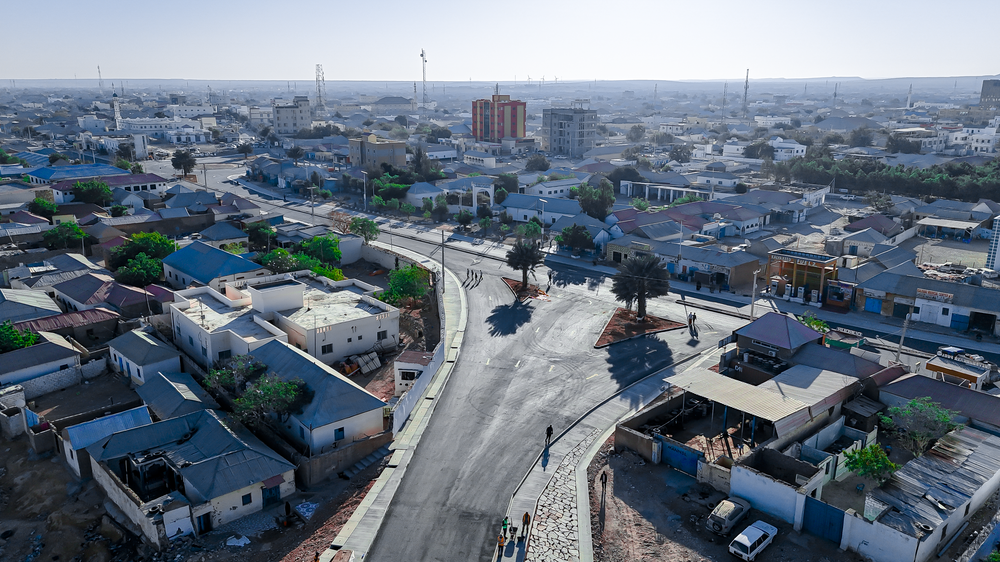
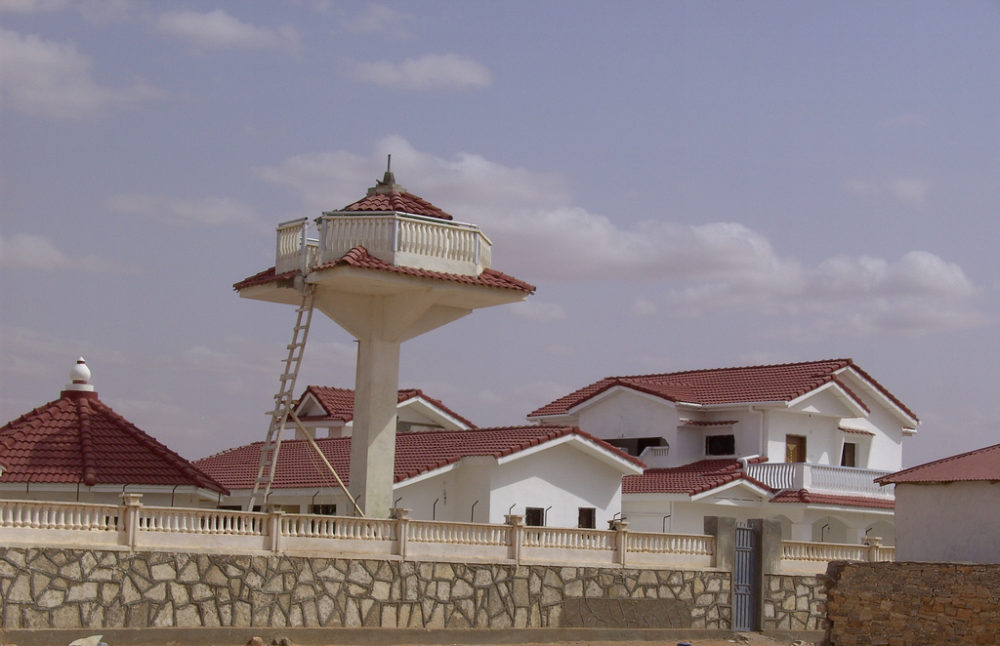

Saqafka midabka leh
Guryaha buluugga iyo casaanka ah.

Puntland
Garoowe waa magaalo ku taal dhul engegan. Guryaha buluugga, cagaarka, iyo casaanka ah ayaa ka muuqda buuraha marka qorraxdu dhacdo.
Xiga: BerberaGuryaha buluugga iyo casaanka ah.

Jidka weyn ee magaalada.

Guryo cad oo saqaf casaana ah.